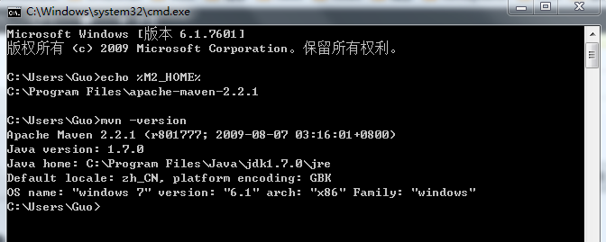
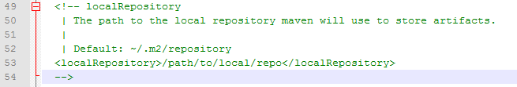

一直想出去走走，但却总有各种借口，不是真的会失去什么，而是我们心里总是怕失去什么。到头来，我们却什么也没有得到，而却失去很多。所以说，趁着我们还年轻，去做我们想做的事情吧。前段时间，我看到一句话，甚是喜欢，故送给大家：you are what you need!
启程
原计划是我们326寝室的兄弟们一起我们的丽江之旅，但由于各种原因，plan被cancel掉了。但我心里还是有那么一种冲动，相出去走走的冲动，所以和女朋友大致计划了一番，决定去湘西转一转：凤凰和张家界。
2013年3月23号中午1:20，我们踏上了去往湖南吉首的k267火车。随着火车慢慢的开动，我们离开了北京，只带着那颗自由的心和行李。下午时光，我和女朋友一边打着扑克，一边听着车厢里面放着的优雅的音乐，一边欣赏着窗外金绿色的油菜地，那一刻，我真的是感到十分放松，十分惬意，有一种"逃离"的感觉，哈哈。
凤凰
2013年3月24号中午，我们便到达了吉首。在吉首的汽车站，我们坐上了去往凤凰的大巴，不到一个小时，便来到了这个美丽的小城。
在凤凰的三天时间里，我还真有一点喜欢上这里了。凤凰依山傍水，烟雨蒙蒙，风景甚是美丽。
"Bachelor"
这几天刚开学，有一些闲时间，就把徐峥的《大男当婚》看完了。呵呵，故事情节很一般，就是讲了徐峥饰演的曹小强这个角色和五个女人的恋爱故事，分别陈述的，看到中间的时候还有一丝丝的无聊。但是，曹小强这个角色却给了我很深的印象，从他身上看到了很多的优点。
曹小强，待人真诚，热爱生活，积极工作，就是这样的一个很不错的男人，在追求爱情的道路上，屡屡碰壁，直到故事的结尾，也还是没有找到属于自己的那一份爱情。他的身上其实有非常多的优点值得我们去学习，给我最深的就是他的真诚，他对待每一个人都是非常真诚，毫不掩饰自己的缺点，关心他人，为他人着想。真的，他对待每一分爱情都是付出心血的，都是奔着结婚去的，但老天就是不善待他，总是迈不进婚姻的殿堂。
曹小强有一个发小，叫黄伟业，也是一个还算不错的人物吧，有自己的爱好，热爱自由，却在婚姻面前总是怯场。他说的一句话对我印象还是很深的，就是他在自己的“绝症”好了之后说的一句话，“人生的每一秒都应该往死里珍惜”。是啊，人生短暂，我们都应该抓紧时间，去做自己内心想做的事情。
作为程序员，其实我们的生活挺枯燥的 ...
read moreIntership Ending
三个月的实习结束了，这种煎熬也总算暂时告一个段落了。
这第一次的实习用一个词总结，那就是“糟透了”。不仅申请实习的道路漫长，而且实习的内容无聊透顶，实习的工资低的可怜。
先说说实习人物吧。我们一共三个人，两个软件的，一个计科的，那个软件的哥们和我是一个寝室的。我们三个人签了同一份合约，来到了同一个公司，因此踏上了同一条实习道路。
我8月20号就来到了学校，然后和公司申请去实习，没想到公司一再拖沓，9月26号总算等到了消息，然后通知说10月8号来实习，听到这个消息我是又激动又气愤呀，激动的是终于可以去实习了，气愤的是让我在学校等了一个多月。寝室那哥们比我还惨，同样是去这个公司，等了将近两个月，都可以再找一份实习了。
10月8号满心欢喜的来到了实习公司，由于我们平台研发部的办公室还在装修，没有我们的工位，我们三个实习生被安排在了销售部的办公室里。在这个人生地不熟的办公室里，我们看公司资料、学习公司文档整整一个月。我们每一个人都有一个leader，他们会定期来询问我们在学习的过程中有没有碰到问题，而且会热心的帮助我们解决问题。带我的leader叫做田董涛，真的是非常感谢田学长啊，每次当我问问题，都会非常热心的帮我解决。
11月份，我们才和整个团队坐到了一个办公室里面。整个部门采用的是敏捷开发模式，每两个星期为一个sprint，在sprint开始的时候，会有计划会议，在sprint结束的时候，会有评审会议和回顾会议 ...
read moreJava发送HTTP GET POST请求
最近，公司的一个项目需要拿到第三方项目的数据，我们解决的大致思路就是Java发送HTTP GET POST请求，得到页面数据之后，用jsoup进行解析，然后入库。由于这个第三方项目需要登录，所以，我们第一次登陆请求进去之后，需要记录下cookie，下次发送请求的时候，直接把这个cookie放到header里就可以了。
发送GET请求：
URL url = new URL("URL链接"); URLConnection connection = url.openConnection(); connection.setRequestProperty("Connection", "Keep-Alive"); String returnCookie = connection.getHeaderField("Set-Cookie"); String cookie = returnCookie.substring(0, returnCookie.indexOf(";")); //取得cookie
发送POST请求：
URL url = new URL("URL链接"); URLConnection connection = url ...
Maven入门
如何快速搭建maven项目：
1. 下载maven
解压到C:\Program Files\apache-maven-2.2.1
2. 配置Maven环境
环境变量 -> 系统变量 -> 新建 -> M2_HOME (C:\Program Files\apache-maven-2.2.1)
环境变量 -> 系统变量 -> 找到Path -> 编辑 -> ;C:\Program Files\apache-maven-2.2.1
然后，打开命令提示符(cmd)，检查Maven环境是否配置成功：

3. 修改Maven仓库
Maven仓库用于存放我们在项目中用到的所有jar包，其配置在conf目录下的settings.xml文件中。

一般情况下使用默认的目录即可，如果想更改目录，直接修改
4. 创建Maven项目
使用cmd进入相应的文件目录下，直接输入命令即可。
创建普通项目：mvn ...
read morePOJ 1007
思路：
首先要理解unsortedness是什么意思，其实就是“字母倒置”的意思，有几对倒置的字母，unsortedness就是多少。求出unsortedness之后，就是一个简单的排序，冒泡搞定。
代码：
#include<stdio.h> #include<string.h> int main(void) { int m, n, i, j, k; char str[100][51]; int num[100] = {0}; int flag[100] = {0}; char temp[51]; int temp_int; scanf("%d%d", &m, &n); for(i ...